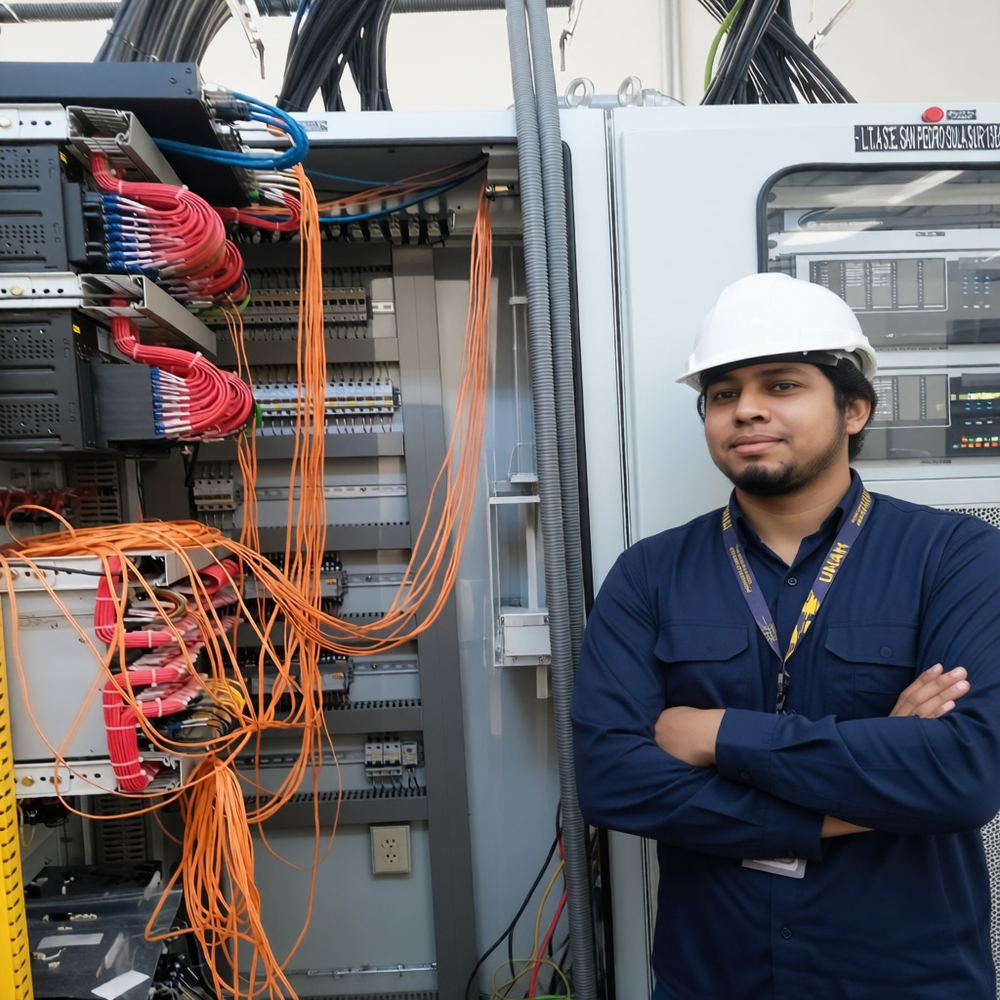
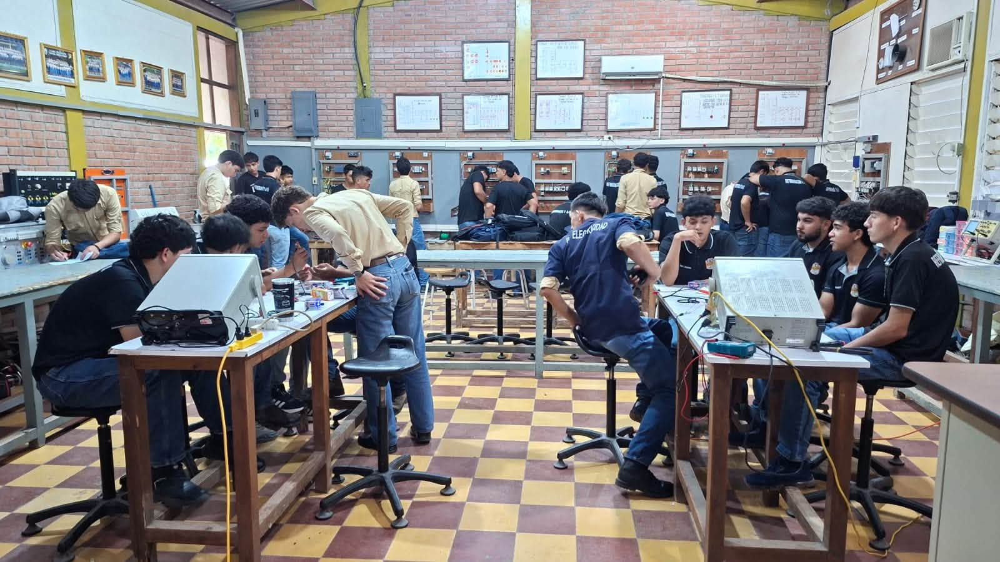
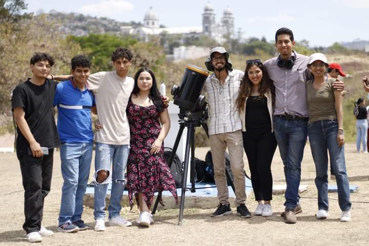
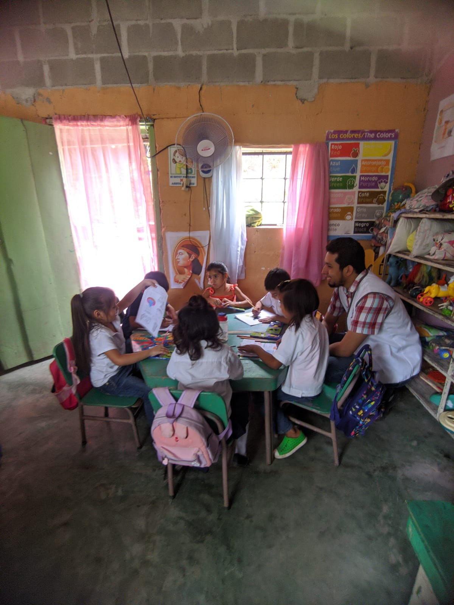
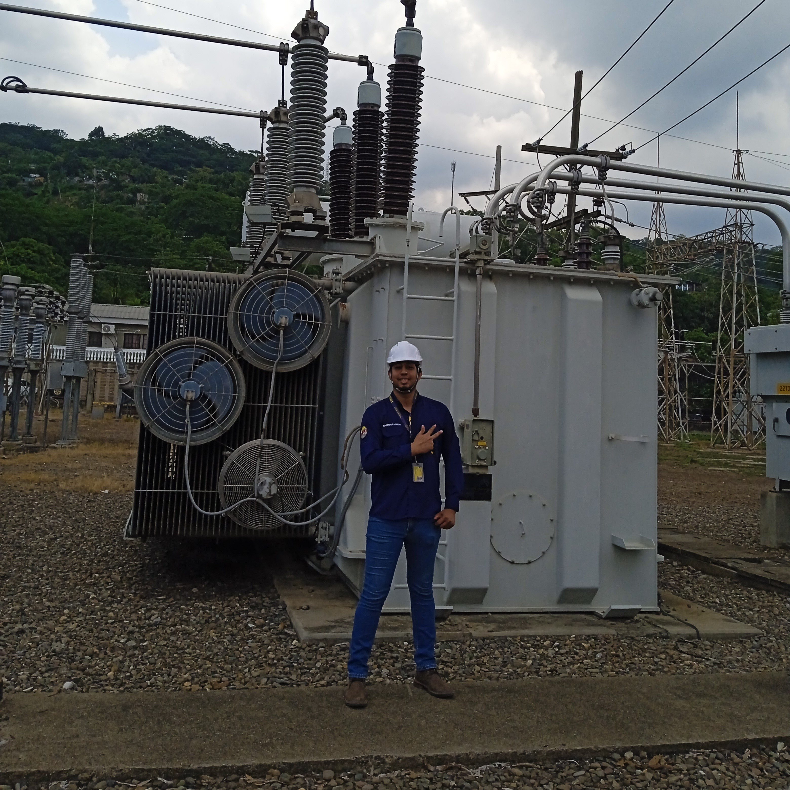
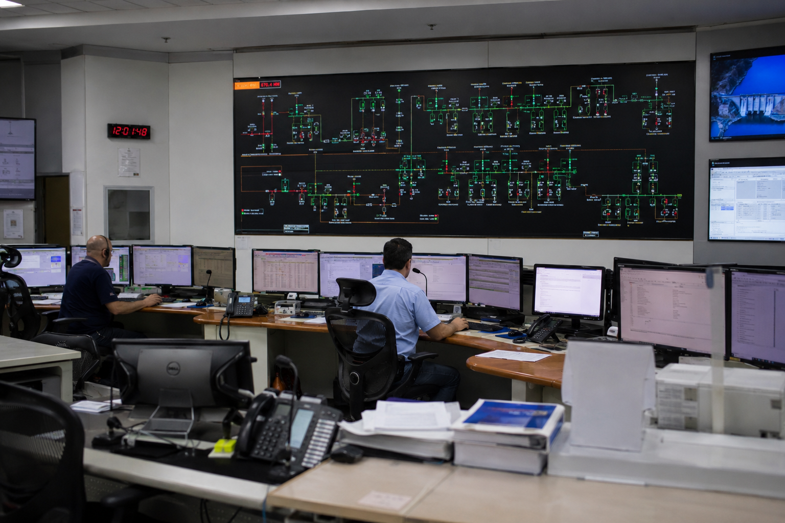

Engineering, curiosity, and learning applied to real problems.
I am an Industrial Electrical Engineer interested in developing solutions that improve processes and make work more efficient within industrial environments. My main areas of interest include automation, electrical systems, analysis, and technical software development.
My approach to learning is driven by curiosity: understanding how something works, finding ways to improve it, and turning that knowledge into a practical solution.

My interest in engineering began before university.
During high school, I had the opportunity to work in electrical workshops. That experience gave me an early understanding of technical work and confirmed my interest in pursuing a career where I could face real challenges and continue learning.
After meeting the university admission requirements, I decided to pursue Industrial Electrical Engineering, a decision that shaped much of my professional development.

Learning also meant collaborating beyond my own discipline.
I spent most of my degree at UNAH Ciudad Universitaria. My curiosity led me to build relationships with students and professionals from different fields, which became an important part of my development.
I contributed to academic projects related to research and astrophysics while also developing engineering projects of my own, often inspired by problems and situations that could arise in a professional environment.

Professional development also means learning to work with others.
During the pandemic, my university progress slowed down. While spending time back in my community in Santa Bárbara, I decided to use that time to become involved in the newly established Club Leo Leticia Mejía, part of Lions International.
Since then, I have participated in initiatives supporting local communities and schools with limited resources, as well as food assistance activities. I currently serve as Service Advisor on the club's board.

I used the final stage of my degree to broaden my training.
During the final year of my degree, I transferred to UNAH-VS. I used that stage to progress intensively through my academic plan and complete two areas of specialization: Power Systems and Electromechanics.
I also took courses related to control systems and automation, areas that became particularly interesting to me and now play an important role in the projects I develop.

Continuous learning is part of the journey.
My long-term goal is to continue my education through a master's degree related to electrical engineering or automation, ideally at a highly regarded university.
I understand that this is a long-term goal that requires time, experience, and resources. For now, my focus is on building professional experience, developing new skills, and pursuing opportunities that allow me to move progressively toward that goal.
For now, my priority is to keep learning, take on new challenges, and turn technical knowledge into useful solutions.
